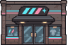
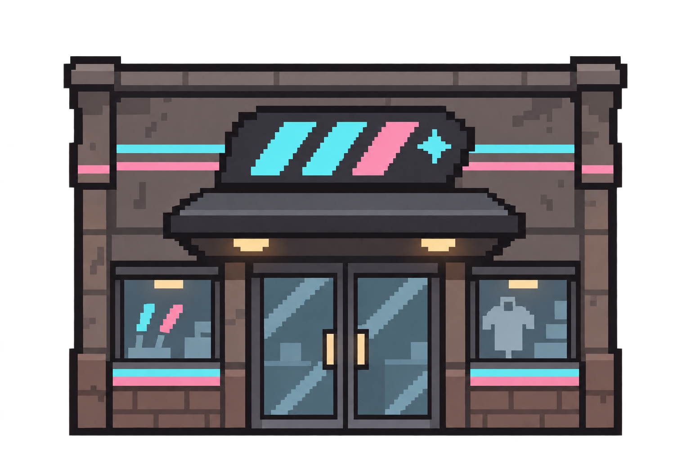
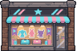
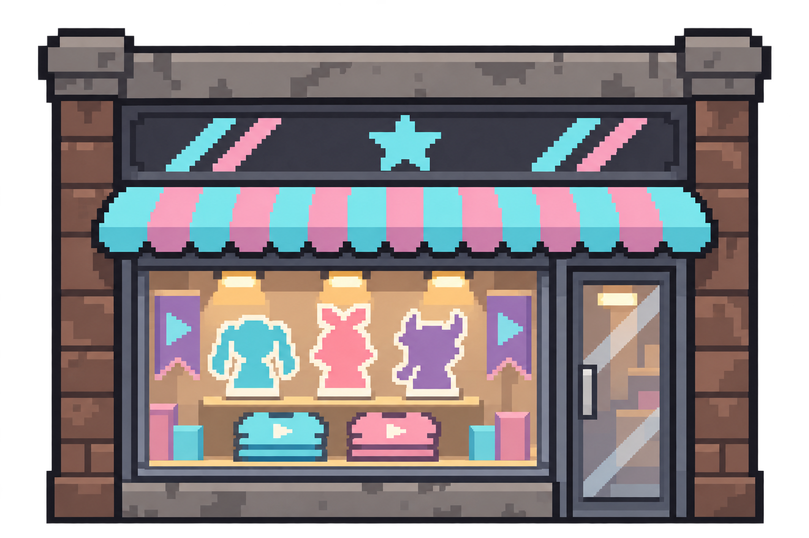
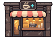
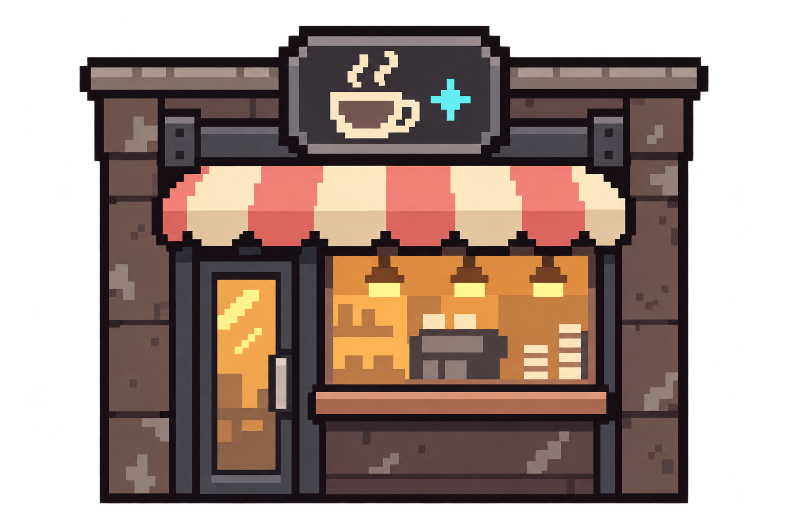
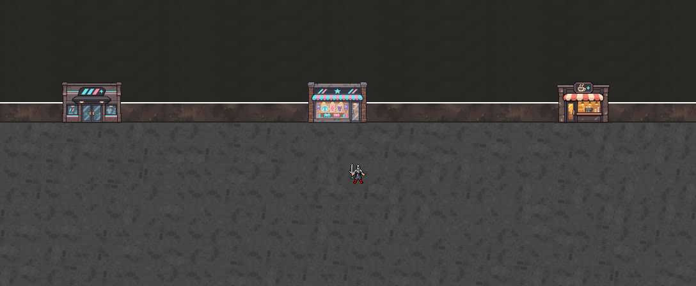

4~7층 공통 상점가용 초안입니다. 파랑·분홍 간판과 밝은 입구를 기존 콘크리트 거리 재질에 조합했습니다. 아래는 실제 96×64픽셀 도트의 확대본입니다.
파랑·분홍 간판 · 유리 양문 · 작은 쇼윈도

실제 크기 · 가로 3칸

줄무늬 차양 · 진열창 · 옆 출입문


크림·코랄 차양 · 컵 간판 · 주문 창구


가게 전면과 벽면 높이를 함께 2칸으로 맞췄습니다. 왼쪽부터 라이브숍·굿즈숍·카페. 캐릭터는 기존 32픽셀 크기입니다.
